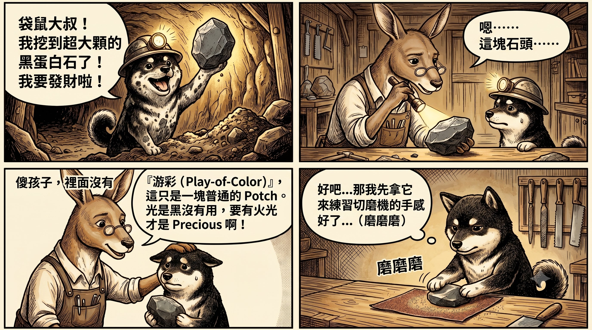

黑柴小學堂 · GAA 分級系統入門
獵人的第一道門檻：
Precious 還是 Potch？
在澳洲礦區，當礦工從泥土裡挖出一塊原礦時，他們腦中只會閃過兩個分類。 這也是 GAA（Gemmological Association of Australia）分級系統的最初階—— 搞懂這一步，你就已經比大部分剛入門的蛋白石愛好者更懂行了。
簡答：兩者的差別只有一個關鍵——是否具有游彩效應（Play-of-Color）。
有游彩、轉動時閃出跳動彩光的是貴蛋白石（Precious Opal），具寶石價值；
沒有游彩、僅呈黑灰白單色的稱為 Potch（普通蛋白石），市場價值低但常作為切磨練習石。
底色黑不等於黑蛋白石，有火光才是。

🐕 黑柴小學堂漫畫時間 · 袋鼠大叔教學現場
1. 貴蛋白石 (Precious Opal)：帶著魔法的寶藏
特徵：擁有「游彩效應（Play-of-Color）」。
- 獵人筆記：只要這顆石頭轉動時，會閃爍出會跳舞的彩色火光，它就是我們夢寐以求的「貴蛋白石」。
- 無論它的底色是黑、是白、還是透明，只要有火光，它就具備了寶石的價值！
2. 普通蛋白石 / 無彩蛋白石（礦區俗稱 Potch）
特徵：沒有「游彩效應」。
- 獵人筆記：它的內部小球體排列得非常雜亂，光線進去後只能隨便亂鑽，無法折射出彩虹光。
- 它看起來可能像普通的黑色、灰色或白色的石頭。
💡 公會小秘辛：雖然 Potch 在市場上沒有高昂的寶石價值，但它可是新手獵人最棒的「練習石」！
在初階切磨課程中，通常會先拿沒有火彩的 Potch 來練手感，等技術熟練了，再挑戰真正有火彩的貴蛋白石。